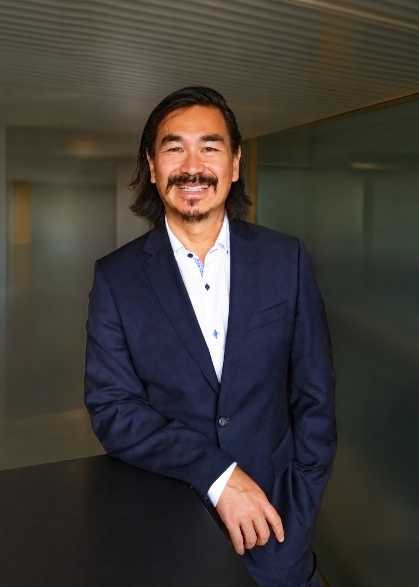

Tam Nguyen
Fractional CHRO & Executive Advisor
Tam Nguyen is a Zurich-based Fractional Chief Human Resources Officer and Executive Advisor. He supports executive management, boards of directors and owners on strategic people and organisation matters, particularly in phases of growth, transformation and structural realignment.
With more than 20 years of experience in human resources management and several years of responsibility at C-level, he combines strategic clarity with the ability to implement. As CHRO he was a member of the executive management of internationally active organisations with sites in Europe and Asia, including board exposure in China and South Korea. His responsibility covered organisational design, HR governance, leadership development and complex employment-law and compliance matters.
He combines classic CHRO experience with data-based analysis and the responsible use of digital and AI-enabled instruments. Within a short time he creates transparency on the maturity, risks and priorities of an HR organisation and condenses this into a sound basis for decisions by executive management and boards. The focus is an effective people strategy, a clear decision architecture and sustainable organisational development.
Tam Nguyen developed TaVyro Executive Intelligence® (TEI®), an AI-enabled multi-agent system for cross-functional organisational diagnostics. It condenses signals into a substantiated assessment and prioritised fields of action. In addition, he developed Trust Room, a protected digital space for reflection on sensitive leadership and organisational questions.
Engagements are, as needed, mandate-based through TaVyro GmbH or in permanent employment. Tam Nguyen works his way into a company in a focused and structured manner, integrates quickly into its culture and leadership structures and takes responsibility for analysis, decision-making and implementation. He combines strategic people leadership with operational steering, creates alignment in the top team and delivers measurable results in governance, organisational design, leadership and HR transformation.
TaVyro TaVyro Executive Intelligence® Trust Room External HR leadership for SMEs fractional-chro.ch
Professional experience
TaVyro GmbH
Founder & Managing Partner, Fractional CHRO
Advice to CEOs and leadership teams on people strategy, organisational design, transformation, HR technology and AI.
Mandates in technology and digital financial services, social insurance and social institutions, as well as gastronomy and start-ups.
Swizzbrand GmbH, Zurich & Shenzhen
Founder & Managing Partner
Build-up and management of a China go-to-market and digital commerce setup for Swiss SMEs, including WeChat as a communication and payment-enabled sales channel.
WinGD (formerly Sulzer Diesel)
CHRO, Member of the Executive Management
Overall responsibility for global HR, quality management, EQHS and facility management. Sparring partner to the CEO across Europe, the UAE and Asia, with board mandates at WinGD China and WinGD Korea. Introduction of an HRIS, a global job architecture and compensation systems, cultural transformation, and HR governance towards the board of directors and the international owner.
University of Zurich
Head of Human Resources, Faculty of Arts and Social Sciences
HR leadership for around 1,800 employees in a decentralised faculty. Advice to faculty and institute leadership, and responsibility for employment-law proceedings and HR policies.
Kuoni Global Travel Services
Head of Human Resources Europe
People strategy for growth, service quality and seasonal steering across several countries. Leadership of the regional HR teams in recruitment, employee relations, leadership development and restructuring.
Before that, senior HR responsibility in industry, energy and financial services, including at Angst+Pfister, the Aduno Group (Viseca) and EGL (Axpo), as well as HR project responsibility at the Swiss Agency for Development and Cooperation. A professional foundation in finance management, including at Thomson Reuters and Berner Versicherung.
Education and languages
lic. phil. in Work and Organisational Psychology, University of Bern
CAS Digitalisation and AI in HRM (2025/2026)
CAS Executive Management (2018)
Coach certification (2026)
German (native, Bernese German), English (fluent for negotiations), French (very good), Vietnamese (conversational)